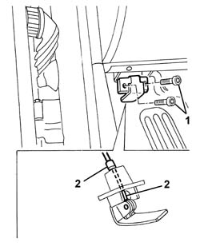

7025A24 BOOT LID OPENING LEVER - R+R
- Path
- Procedures > 70 FITTINGS > 7025 COMPARTMENT LIDS > 7025A LOCATION OF BONNET WIND NOISE > 7025A24 BOOT LID OPENING LEVER - R+R
- Kind
- repair procedure (removal / refitting; the operation number is the code)
- Applies to
- all engines; all production periods
- Interactive page
- https://sloeber94.github.io/elrnDB-aGt/en/#/125001827
Applies to: all engines; all production periods
 Removing
Removing
 Refitting
Refitting1. Undo the bolts and move the lever.
2. Disconnect the cable from the retainers and recover the lever.

Applies to: all engines; all production periods
Refitting
RemovingCheck that the lever is undamaged.
Connect the cable to the lever retainers.
Position the lever and tighten the bolts.
Check that the bonnet opening control works.